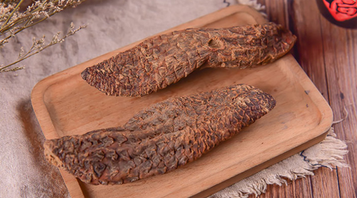
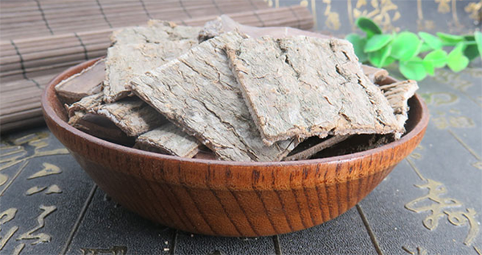

阳气对我们的身体尤为重要，阳气不足的人群身体会很虚，症状表现为四肢冰冷、疲乏无力、脉搏无力、腰膝酸软、命门火衰、性欲低下、阳痿早泄、精寒不育、宫冷不孕、脾肾阳虚、脘腹冷痛、尿频遗尿、肝肾不足、精血亏虚之眩晕耳鸣等症状。中药补阳是民间常用的方式，下面中药大全网介绍以下10种补阳的中药。
1、鹿茸
鹿茸具有温肾壮阳、强筋健骨、生精益血的功效，有促进发育生长和造血功能，适用于虚损，头晕，耳聋，目暗，阳痿，滑精，腰膝无力，虚寒带下，崩漏等症，被称为峻补元阳的要药。从现代医学观点看，“元阳”实际上包括了生殖、生长等一些基本的生理功能，下面我们来了解更多关于鹿茸的功效与作用......【查看详情】
2、狗脊
狗脊具有补肝肾，强筋骨的功效，狗脊能入肝肾，所具二功，补肝肾而强筋骨，适用于肝肾不足，腰脊酸软、或俯仰不利、转侧疼痛等，了解更多关于狗脊的功效与作用......【查看详情】
3、肉苁蓉

肉苁蓉具有益精血、补肾助阳、滑肠通便的功效，对治疗肾虚患者，补阳滋阴都一定作用，适用于男子阳痿，女子不孕，腰膝冷痛，血枯便秘等症，了解更多关于肉苁蓉的功效与作用......【查看详情】
菟丝子具有补肾益精、明目、止泻、固胎的功效，适用于腰膝酸痛，滑精，小便不禁，目暗不明，脾肾虚泻等症状，治肾虚体弱，包括阴虚阳虚，但较常用于补肾阳、治脾肾皆虚，了解更多关于菟丝子的功效与作用......【查看详情】
5、仙茅
仙茅具有温补肾阳，强壮筋骨的功效，主要针对补肾阳，强筋骨，散寒湿等症状，适用于阳痿精冷，腰膝冷痛，风湿关节炎，慢性肾炎，遗精、小便失禁，心腹冷气症状的人群，了解更多关于仙茅的功效与作用......【查看详情】
6、蛤蚧
蛤蚧具有补肺肾、止喘嗽，有滋补、强壮的作用。主要针对于虚劳咳嗽，气喘，肺痿，咯血，消渴，阳痿，腰膝无力等症状，著名的蛤蚧酒就常用于补肾壮阳，但是也有些禁忌，具体请查看更多关于蛤蚧的功效与作用......【查看详情】
7、冬虫夏草
冬虫夏草具有益肺肾，止喘嗽的功效，有扩长支气管、镇静、抗菌的作用，适用于虚劳咳嗽，吐血，阳痿，腰膝酸痛，遗精等症。多用于虚弱证，肺结核咳血，老年人虚弱性慢性咳喘，病后盗汗，自汗或贫血等症，慢性肾炎患者常服冬虫草，好处多到你想不到，了解更多关于冬虫夏草的功效与作用......【查看详情】
8、锁阳
锁阳具有益精状阳、润燥滑肠、养筋的功效，有着补肾壮阳固精，润肠，强腰膝的作用，适用于阳痿早泄，血枯便秘，腰细痿弱，女子不孕等症状的人群，了解更多关于锁阳的功效与作用......【查看详情】
9、续断
续断具有补肝肾、续筋骨、活血、安胎的功效，适用于跌打损伤，痈疽肿痛，腰膝无力，风湿痹痛，胎动不安及崩漏等症状，了解更多关于续断的功效与作用......【查看详情】
10、杜仲

杜仲具有补肝肾、强筋骨、安胎等功效，对于治疗腰痛，尤其肾虚腰痛，杜仲也有很好的作用，适用于筋骨痿软、腰脊四肢酸痛，肾虚尿频，胎漏，胎动不安，高血压病，头晕目眩等症。了解更多关于杜仲的功效与作用......【查看详情】
结语：补阳的中药有很多，以上鹿茸、狗脊、肉苁蓉、菟丝子、仙茅、蛤蚧、冬虫夏草、锁阳、续断、杜仲为十种常见的补阳的中药。